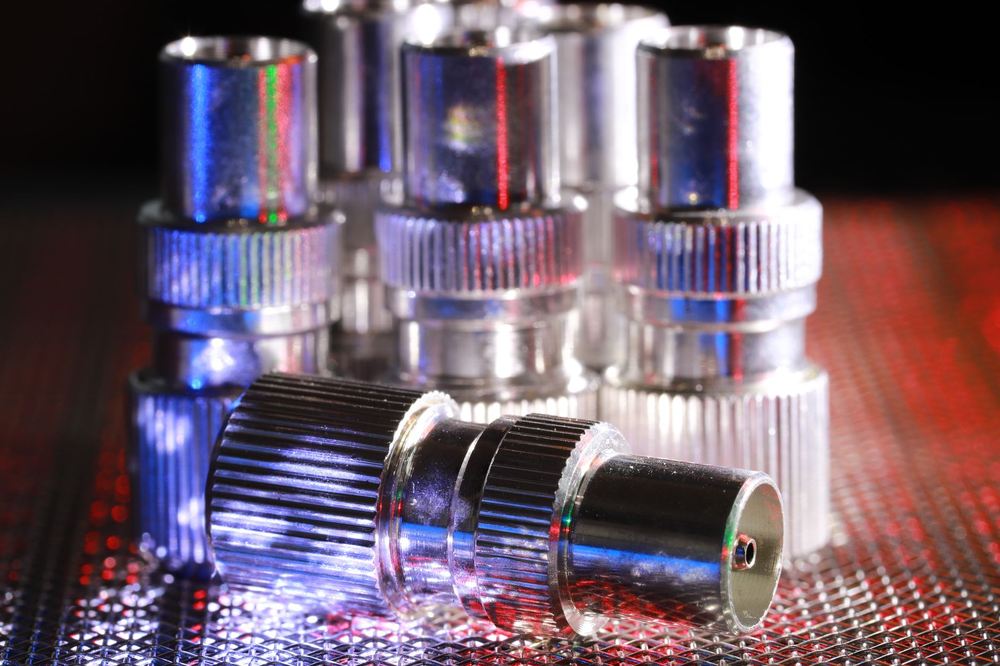

美 완성차 중국산 부품 80% 삭감, 韓 Tier2 소재 분기점

GM·포드·스텔란티스 3사는 2024년 말 기준 중국산 Tier1·Tier2 부품 조달 비중을 각각 약 12~18% 수준으로 공시했다. 3사는 2027년 납기 목표로 대체 공급처 다변화 계획을 발표하며, 중국산 의존도를 현행 대비 80% 이상 줄이겠다고 명시했다.
차량용 공급망에서 중국산 비중이 높은 품목은 희토류 자석(네오디뮴·디스프로슘), 알루미늄 다이캐스팅, 차량용 커넥터, MLCC 등이다. 이 중 희토류 자석은 글로벌 공급의 92%가 중국에 집중되어 있어 2027년까지 완전 대체는 구조적으로 불가능하다는 평가가 지배적이다.
한국 기업 중 차량용 알루미늄 소재(현대제철·노벨리스 코리아)와 MLCC(삼성전기)는 이미 글로벌 Tier1 공급망에 진입해 있다. 삼성전기는 2024년 차량용 MLCC 매출 비중을 전체의 28%로 높였으며, 2026년 40% 목표를 공개했다. 문제는 희토류 자석·특수 커넥터처럼 아직 국내 인증 체계가 미완성인 품목이다.
미국 인플레이션감축법(IRA) 개정 논의에서 '친구 나라 광물(Friend-shoring Mineral)' 조항이 2025년 하반기 재논의에 올라 있다. 이 조항이 확정되면 중국산 광물·소재를 사용한 부품은 EV 세액공제 대상에서 제외된다. 한국은 IRA 적격 FTA 체결국이어서 직접 수혜가 가능하나, 소재 원산지 추적(traceability) 시스템 구축이 선결 조건이다.
미국 빅3 완성차의 중국산 부품 삭감 선언은 단순한 정치적 레토릭이 아니다. IRA·CHIPS법 이후 공급망 보조금이 '어디서 만들었느냐'가 아니라 '어디 소재를 썼느냐'로 이동하면서 Tier2·Tier3 소재 원산지가 실제 수주의 당락을 결정하게 됐다.
한국이 이 구조에서 수혜를 보려면 두 가지 조건이 동시에 충족돼야 한다. 첫째, 차량용 AEC-Q200·TS16949 등 완성차 인증을 사전 취득한 소재 기업이어야 하고, 둘째 IRA 원산지 추적을 위한 블록체인 기반 공급망 문서화 시스템을 갖춰야 한다. 이 두 조건을 동시에 갖춘 한국 중소기업은 현재 50개 미만으로 추산된다.
역설적으로 희토류 자석 부문은 단기 대체가 불가능하기 때문에 미국 완성차가 중국 공급사와 '조용한 거래'를 유지할 가능성이 높다. 즉, 선언과 실제 조달 사이의 괴리가 발생하며, 한국 기업은 '선언 수혜'가 아닌 '실제 수주 가능 품목'을 정밀하게 식별해야 한다.
삼성전기(차량용 MLCC), 현대제철(알루미늄 소재), LS엠트론(커넥터)처럼 이미 글로벌 완성차 Tier1 인증을 보유한 기업은 직접 수혜권이다. 삼성전기는 2025년 차량용 MLCC 생산능력을 부산 사업장 기준 30% 증설 중이며, 이는 미국 대체 수요를 겨냥한 사전 포지셔닝이다.
일본 TDK·무라타도 동일 수혜를 받지만, IRA 친구 나라 조항이 확정되면 FTA 비체결국인 일본은 원산지 요건에서 불리해진다. 한국은 미한 FTA 덕에 소재 원산지 인정 범위가 넓어 일본 대비 구조적 우위가 생길 수 있다.
중국 BYD 부품 계열사·닝보 Tier1 공급사는 미국 완성차 공급망에서 직접 이탈 압력을 받는다. 이들은 멕시코 우회 생산을 시도하고 있으나, 2025년 미국의 멕시코산 중국계 부품 관세 25% 부과로 우회 경로도 차단되는 상황이다.
한국 내에서도 인증 없는 소재 중소기업은 이 수요를 흡수하지 못한다. 산업부 1,700억 원 소부장 지원금이 있어도 차량용 인증(TS16949) 취득에 통상 18~36개월이 소요되기 때문에, 2027년 납기에 맞추려면 지금 당장 인증 절차를 시작해야 한다. 현재 신청 접수를 완료하지 않은 기업은 이번 사이클을 놓친다.
차량용 소재 기업의 최우선 과제는 IRA 원산지 추적 요건 충족이다. 2025년 하반기 IRA 개정 논의 확정 전에 광물 원산지 추적 시스템(DPP, Digital Product Passport)을 선제 구축한 기업이 2027년 수주 경쟁에서 앞선다. 현재 유럽 EU Battery Regulation이 DPP를 2027년부터 의무화하는 점을 감안하면, 유럽·미국 동시 대응 투자가 효율적이다.
투자자 관점에서는 차량용 MLCC·알루미늄 소재·특수 커넥터 분야에서 TS16949 인증을 기보유하고 미국 Tier1 납품 레퍼런스가 있는 한국 중소·중견기업을 선별 검토해야 한다. 인증 없는 기업은 1,700억 소부장 지원을 받아도 2027년 납기에 현실적으로 진입 불가다.
실제 조달 현장에서는 — 미국 완성차 구매팀이 2024년 하반기부터 한국 소재 공급사에 '원산지 추적 문서화 가능 여부'를 사전 질문 항목에 추가하기 시작했다. 단순 샘플 제출보다 공급망 문서화 역량을 먼저 묻는다는 뜻이다. 이 질문에 답하지 못하는 기업은 RFQ(견적 요청) 단계에서 이미 탈락한다.
이 포스팅은 쿠팡 파트너스 활동의 일환으로 수수료를 제공받습니다.